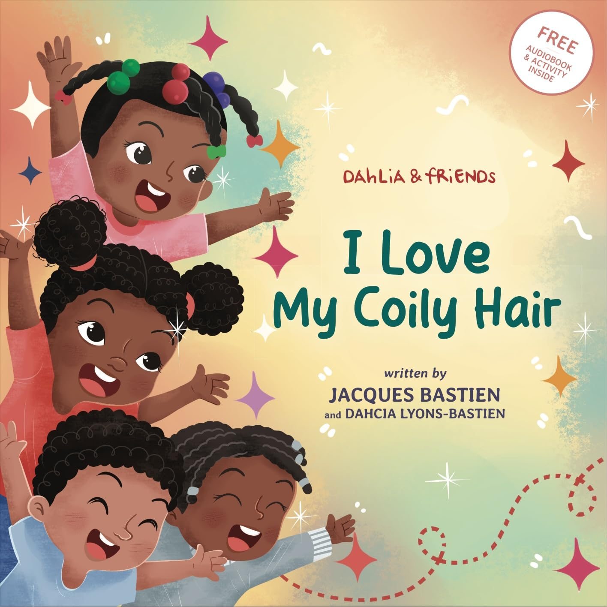

- Book Review: I Love My Coily Hair
- Illustrator: Wendi Hendra Saputra
- Grade Level: DK/TK-2
- Guided Reading Level: K
- Lexile Level: 450L
Book Synopsis from Amazon:
In today's adventure, Dahlia and her friends discover unique hairstyles, from coily twists to swinging locs, celebrating creativity and self-expression. "I Love My Hair" is an ode to embracing natural hair, fostering confidence and self-love in young readers. This story is perfect for parents and caregivers seeking a way to instill pride in their little ones and spark conversations about individuality and acceptance.
Review Highlights…
- This book features a young female African-American protagonist, Dahlia.
- This lovely story features a beautiful protagonist that shares hair love.
- Dahlia takes you to meet her friends and see their different types of hair.
- The story illustrates all types of hair in a positive light.
- This book is a part of a series, Dahlia & Friends.
- Parent: This book is a great bedtime story. It is a beautiful self-love presentation that is great for young readers developing their self-esteem. Building confidence in young children supports them as they grow up. It features a rhyming text that is partnered with beautiful illustrations.
- Teacher: This book would be a great addition to any classroom. You can use it for a read-aloud. Young children, especially, would benefit from seeing themselves represented in the literature. This book expresses confidence and self-love that will support young children in forming their own identity. This book fits well in a social-emotional unit.
- Last Note: If you obtain a copy of the story in board book format, it will be useful for young children. Toddlers and older preschoolers can use the book and look at the beautiful pictures.